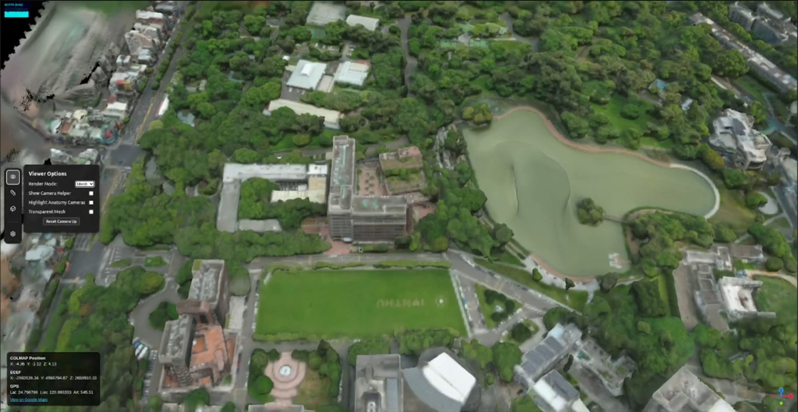
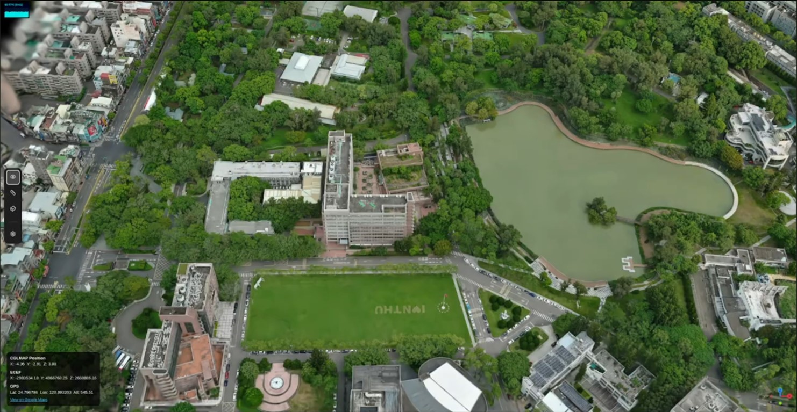
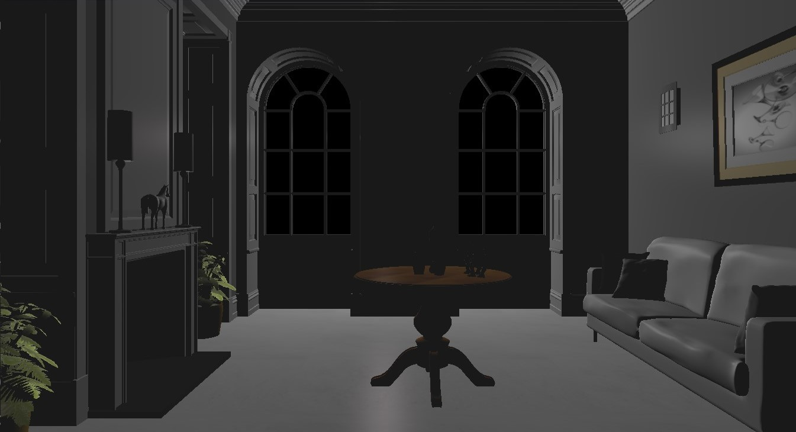
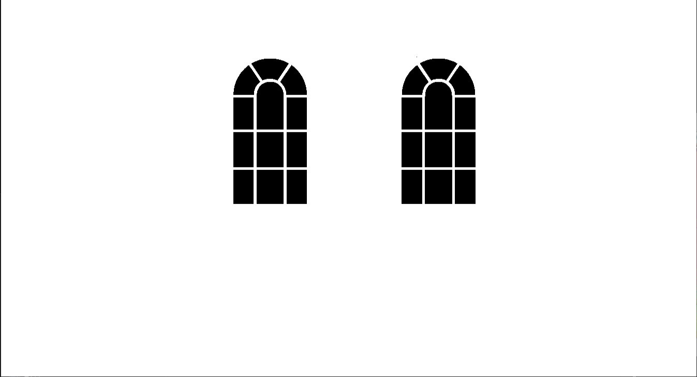

|
Sheng-Hsiang Hung
I’m an M.S. student in Computer Science at National Tsing Hua University (NTHU), advised by Prof. Hung-Kuo Chu.
Email /
CV /
Github
|
Research
I'm interested in computer vision, deep learning, and image
processing. Most of my research is about 3D reconstruction usually with radiance fields.
|


3DGS
Mesh
|
Real-Time 3D Scene Digitization and Measurement Platform
Industrial collaboration (ITRI x NTHU), 2025
demo
Built an image-to-3DGS/mesh reconstruction pipeline and a 60 FPS web viewer with distance/volume measurement tools achieving less than 1 m real-world error.
Tech: Javascript, React, Three.js, Python
|


Ambient
Full
|
Real-Time Rendering Engine with Advanced Lighting and Post-Processing
Course project, Graphics Programming, 2024
demo
Collaborated in a 4-person team to implement a real-time rendering engine with Blinn-Phong shading, deferred shading, shadow mapping, normal mapping, bloom, SSAO, SSR, FXAA, point light shadows, and area lighting.
Tech: C, C++, OpenGL
|
|
|
STRI2OKE
Course project, Game Programming, 2024
demo
Collaborated in a five-person team to build a real-time interactive game with player controls, gameplay mechanics, scene logic, and visual feedback.
Contributed to core gameplay implementation and integration to deliver a playable Unity-based project.
Tech: Unity
|
|
|
Parallel Ant Colony Optimization for TSP
Course project, Parallel Programming, 2023
report
/
code
Led a two-person team to develop a CUDA/OpenMP parallel Ant Colony Optimization solver for the Traveling Salesman Problem on TSPLIB datasets.
Optimized GPU-based next-city selection using parallel prefix sum, shared memory, bank-conflict avoidance, and reduced warp divergence, achieving up to 137x GPU speedup.
Tech: C, C++, CUDA, OpenMP, CPU/GPU profiling
|
|
|
Audio Super-Resolution with U-Net
Course project, Introduction to Multimedia, 2023
slides
/
code
Led a four-person team to build a U-Net audio super-resolution model with residual/skip connections and AFiLM-based feature modulation.
Combined waveform and spectrogram losses, reducing LSD from 2.60 to 0.85 through two-phase training.
Tech: Python, PyTorch, U-Net, STFT, audio signal processing
|
|
|
Taiwanese Soap Opera Speech Emotion Recognition
Course project, Introduction to Machine Learning, 2022
report
/
code
Led a five-person team to develop a CNN-based speech emotion recognition system using a self-collected Taiwanese soap opera audio dataset.
Extracted MFCC, Mel spectrogram, ZCR, Chroma STFT, and RMS features, and analyzed spectrogram differences between real-world drama audio and acted emotion datasets.
Tech: Python, Pytorch, Transfer Learning
|
|
|
Automatic Writing Machine
Course project, Logic Design Lab, 2021
demo
/
code
Led a two-person team to build an FPGA-controlled handwriting plotter that converts keyboard-selected digits into coordinate-based stroke sequences.
Implemented reusable Verilog FSM modules for line drawing, digit generation, X/Y stepper motor control, and PWM-based servo pen control.
Tech: Verilog, FPGA, FSM, PWM, stepper motor control
|
|
{kind=link}
{kind=link}
{kind=link}
{kind=link}
{kind=link}
{kind=link}